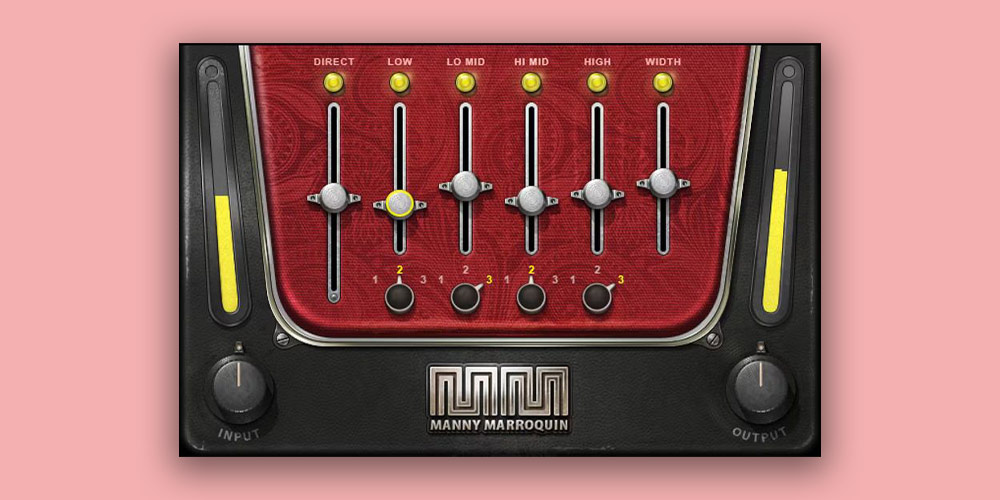

Mejores Plugins de Mezcla y Masterización (2026)

Los plugins de mezcla y masterización son las herramientas que convierten buenas grabaciones en lanzamientos profesionales. Después de más de 20 años mezclando, estos son los tres plugins que uso en cada sesión — los que genuinamente marcan la diferencia en el producto final.
Masterización Hecha Accesible: iZotope Ozone 12 Advanced
Ozone 12 Advanced cambió mi relación con la masterización. El Asistente de Masterización impulsado por IA escucha tu pista y construye una cadena de procesamiento personalizada — EQ, compresión, imagen estéreo, limitación — adaptada a tu género. A partir de ahí, puedes ajustar cada módulo manualmente. El nuevo Stem EQ te permite dar forma a elementos individuales (voces, batería, bajo) dentro del bus maestro, lo que es casi brujería. El módulo Clarity elimina la confusión con precisión quirúrgica. A $499, es la suite de masterización más potente disponible para productores caseros.

iZotope Ozone 12 Advanced
$499 USD
Suite de masterización de nueva generación impulsada por IA. 20 módulos profesionales incluyendo Stem EQ, Clarity, Stabilizer y separación de stems mejorada con redes neuronales.
El Único Bundle de Mezcla Que Necesitas: FabFilter Total Bundle
El FabFilter Total Bundle es la mejor inversión que he hecho en software de audio. Pro-Q 4 es el único ecualizador que uso — la pantalla espectral, las bandas dinámicas y la interfaz son perfección. Pro-C 3 maneja cada tarea de compresión, desde nivelación transparente hasta pegada agresiva. Pro-L 2 es el limitador más limpio del mercado. Saturn 2 añade saturación y calidez, Timeless 3 hace delay, Volcano 3 maneja filtrado. Cada plugin en este bundle es el mejor en su clase. A $1,069, es caro, pero es el último bundle de mezcla que comprarás.

FabFilter Total Bundle
$1.1k USD
El kit definitivo de mezcla y masterización. Pro-Q 4, Pro-C 3, Pro-L 2, Pro-R 2, Saturn 2, Timeless 3, Volcano 3, Twin 3 y más.
La Biblioteca de Sonidos: Native Instruments Kontakt 7
Kontakt 7 es la plataforma de sampler estándar de la industria, y por buenas razones. Más de 900 instrumentos solo en la biblioteca de fábrica, con bibliotecas de terceros que se cuentan por miles. Desde cuerdas orquestales de Orchestral Tools hasta sintetizadores vintage e instrumentos del mundo, si un sonido existe, probablemente haya una biblioteca de Kontakt para él. El nuevo navegador hace que encontrar sonidos sea rápido, y la sección de efectos renovada significa que puedes dar forma a los sonidos sin salir de Kontakt. Para productores que necesitan acceso a cada instrumento imaginable, Kontakt 7 es infraestructura esencial.

Native Instruments Kontakt 8
$399 USD
La plataforma de sampler líder mundial. Kontakt 8 con nuevo navegador, módulo wavetable, herramientas MIDI y más de 900 instrumentos. El estándar de la industria para instrumentos sampleados.
Veredicto:
FabFilter Total Bundle vale cada centavo
Conclusión
Empieza con Ozone 12 Advanced para masterización que suena profesional desde el principio. Añade el FabFilter Total Bundle para herramientas de mezcla que son genuinamente las mejores en su clase. Incluye Kontakt 7 cuando necesites un universo de sonidos al alcance de tus dedos. Estos tres juntos forman un ecosistema completo de mezcla y producción que puede manejar cualquier proyecto.